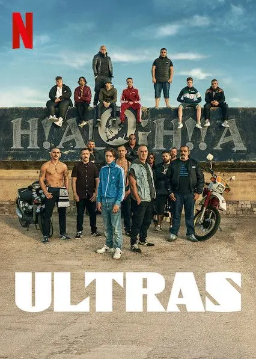
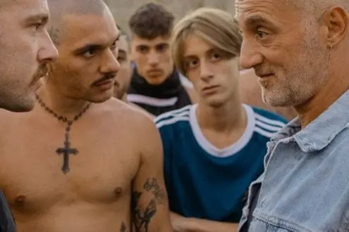

Film: Ultras - il mio personale parere

Ho aspettato per parlare di questo film perché in realtà non ho trovato bene le parole fino a questo punto, ho visto il film Ultras appena uscito. Ovvero, il giorno dopo e devo dire che la mia reazione non è stata molto piacevole. Infatti l'ho trovato un film abbastanza noioso.

Per quanto concerne anche la storia, perché io non vedo che tutti questi Ultras sono così legati alla violenza come volevano far credere in questo film.
Ovviamente, io non ho mai avuto a che fare con gli ultras di nessuna squadra e di nessuna regione; voglio però dire che forse il messaggio che può passare questo film è un po' diverso da ciò che poi sono i tifosi accaniti, come gli ultras.
Il film è diretto da Francesco Lettieri, il produttore di un cantante anonimo diciamo, un cantante che non si fa vedere, ed è proprio questa la tua particolarità, Liberato.
Fin'ora ha sempre parlato d'amore, del carcere, di essere legato a Napoli in ogni sua forma, anche se molte volte ti toglie.
Di fatti,nel film troviamo anche canzoni e musiche quasi tutte di Liberato e forse, è stato anche un modo per lanciare ancora di più questo personaggio.
Lo stesso Lettieri in un'intervista dice:
"che non è stata l'idea di prendere come argomento i tifosi accaniti come punto di riferimento.
Ma è stato mosso dall'idea di un cinquantenne Ultras che è ancora legato all'idea di tifoseria con malinconie, cori, tatuaggi, stadio pieno di persone che acclamano e amano un'ideale".
Ma tutto questo però; a mio avviso, da persona che non ha mai avuto a che fare con certi modi di vivere, da persona che guarda dal di fuori tutto questo, è un po' troppo esagerato.
Sì, abbiamo visto tante volte nei Tg ultras che si picchiano, si uccidono ma il film così, nudo e crudo, volto solo ed esclusivamente ad una vita interessata allo stadio e alla lotta con altre tifoserie, mi è sembrato un tantino troppo.
Ripeto, nel complesso il film è stato un bel po' noioso.
L'ho guardato in quanto seguo la musica di Liberato e mi aspettavo qualcosa in più.
Qualcosa di interessante da vedere o almeno musica più accattivante. Ma purtroppo così non è stato.
Il mio parere è naturalmente un parere di una persona comune.
Ma credo che come primo lavoro da regista di Lettieri sia stato un po'.
Trama:
Sandro è il leader degli Apache, il gruppo di ultras del Napoli, anche se a causa del daspo (il divieto di accedere alle manifestazioni sportive) non è più in prima linea.
Il suo ascendente è ancora forte sul gruppo, pur se sta emergendo una generazione pronta a sostituire gli ormai vecchi leader.

Tra i più giovani c'è Angelo, che vede in Sandro una figura paterna e vive con lo spettro del fratello Sasà, morto anni prima in alcuni tafferugli contro i tifosi romani.
Sandro però conosce Terry e inizia a innamorarsi di lei, prestando sempre meno attenzione agli Apache, che precipitano in un pericoloso caos.
Storia di tifoseria vista dall'interno, senza sconti tanto per i tifosi quanto per la quasi assente polizia.
Ultras è un'opera prima ben strutturata e condotta ma derivativa nello stile.